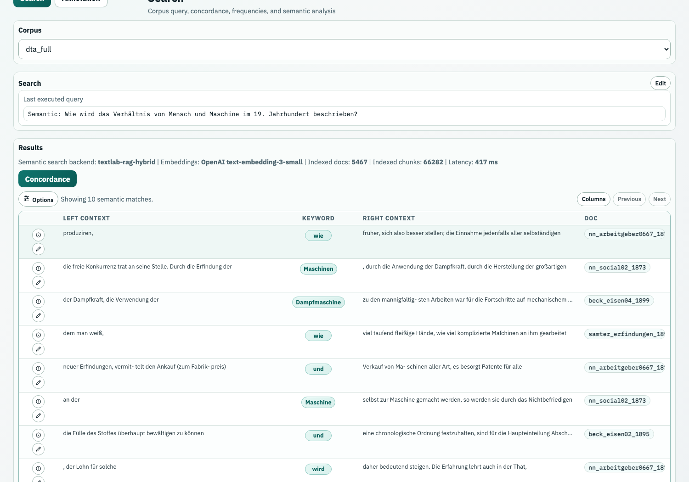

TextLab in den Digital Humanities

Einstieg
TextLab
TextLab macht große Textsammlungen praktisch untersuchbar: als Belege, Verteilungen, Nachbarschaften, semantische Räume und Labels.
DH-Perspektive
Interessant ist nicht nur das Ergebnis, sondern auch die Frage: Wie baut man so ein Tool?
Wir nutzen TextLab doppelt: als Werkzeug für Beispiele und als Fallstudie für DH-Software.
Was TextLab als Operationen anbietet
Belege öffnen
KWIC, Kontext, Dokumentdetails.
Verteilungen sehen
Jahr, Genre, Subreddit, Texttyp.
Nachbarschaften finden
Kollokationen und Beispielkontexte.
Grammatische Profile bauen
Word Sketches aus Annotationen.
Semantisch explorieren
Embeddings, Cluster, Search.
Treffer annotieren
LLM Classification, Review, Export.
Leitmotiv: Jede Operation ist ein Methodenangebot und zugleich eine technische Architekturentscheidung.
Jede Methode hat drei Schichten
Welche Einheiten gibt es: Dokument, Satz, Token, Treffer, Metadatum, Annotation, Vektor, Label?
Wie wird daraus ein Ergebnis: Indexsuche, Gruppierung, Fensterzählung, Dependency-Mapping, Vektorvergleich?
Welche kontrollierbare Handlung entsteht daraus: Query bauen, Treffer lesen, Parameter setzen, Ergebnis prüfen?
Das ist auch für DH-Programmierung relevant: Methode, Datenmodell und Softwaredesign sind hier nicht getrennt.
Architektur der App
Die zentrale Designidee: Einmal sauber kompilierte Korpora sollen viele Analyseoperationen tragen.
1 Rohdaten
XML, csv, json, txt
→
2 Korpusmodell
Dokumente, Chunks, Metadaten
→
3 NLP
Token, Lemma, POS, Dependencies, NER
→
4 Suchindex
BlackLab, BCQL, KWIC, Groups
→
5 Anwendung
API, UI, Module, Jobs
TextLab als Software-System
Frontend
React: Korpusauswahl, Query Builder, Ergebnisansichten, Module, Settings.
Backend
FastAPI: Endpunkte für Suche, Schema, Frequenzen, Jobs, Annotation, KI-Workflows.
Suchmaschine
BlackLab: tokenbasierter Index, BCQL, Trefferpositionen, Kontext, Gruppierungen.
Viele UI-Aktionen sind deshalb kleine Pipelines: Input validieren, API-Request bauen, Index/Job ausführen, Resultat in eine lesbare Form bringen.
Corpus Registry: Korpuswissen als Konfiguration
Index
BlackLab weiß, welche Felder technisch vorhanden sind.
Registry
TextLab weiß, was Felder bedeuten, welche Werte wichtig sind und welche Module sinnvoll sind.
UI
Query Builder, Korpusauswahl und Filter bekommen dieselben Informationen.
QA
Docs und Tests können gegen dieselbe Quelle prüfen.
Registry als Schnittstelle
Ausschnitt aus server/corpora.yml: Die App behandelt Korpuswissen als Konfiguration → single source of truth.
Korpuslinguistik
Eine dokumentierte, maschinenlesbare Textsammlung mit Auswahlkriterien und Metadaten.
Zusätzliche Schichten über dem Text: Token, Lemma, Wortart, syntaktische Relation, Entität.
Eine Query erzeugt nicht einfach “die Antwort”, sondern eine Menge von Treffern, die weiter analysiert wird.
Korpuslinguistik: Hintergrund
Empirie
Korpora machen viele authentische Belege systematisch zugänglich.
Variation
Zeit, Genre, Register, Region oder Community werden vergleichbar.
Operationalisierung
Begriffe werden zu Suchmustern, Trefferräumen und kontrollierbaren Aggregationen.
Sinclair 1991 Biber, Conrad & Reppen 1998 Hunston 2002 McEnery & Hardie 2011
Text wird zur Datenstruktur
TEI/XML beschreibt Text, Struktur und Metadaten. Für die Suche wird daraus ein Tokenstrom mit Annotationen.
| pos | word | lemma | pos_tag | dep_rel | metadata |
|---|---|---|---|---|---|
| 1 | Die | der | ART | nk | year=1848 |
| 2 | Freiheit | Freiheit | NN | sb | year=1848 |
| 3 | bleibt | bleiben | VVFIN | root | year=1848 |
| 4 | umkämpft | umkämpft | ADJD | pd | year=1848 |
Korpussuche heißt: über Wortform, Lemma, Wortart, syntaktische Relation oder Metadaten filtern.
Grundoperationen
Query
Korpus, Tokenattribute und Filter definieren den Suchraum.
KWIC
Treffer werden mit linkem und rechtem Kontext lesbar.
Frequency
Treffer werden nach Annotationen oder Metadaten gruppiert.
Collocations & Word Sketches
Nachbarwörter werden gezählt und bewertet.
Modeling
Embeddings, Topics oder LLM-Labels ergänzen die Suchlogik.
Operationalisierung
Konzept
Ein Begriff, ein Muster, eine historische Frage oder ein Vergleichsinteresse.
→
Query
[lemma="Demokratie"]
Das ist ein Suchweg, nicht der Begriff selbst.
→
Trefferraum
KWIC-Zeilen, Frequenzen, Jahre, Genres, Communities, Kollokationen.
Daten im TextLab
| Korpus | Größe | Stärken für die Demo | Typische Frage |
|---|---|---|---|
| English Reddit | 41.3M Tokens | regionale Communities, Variation im Englischen | Welche Themen und Wörter markieren Regionen? |
| German Reddit | 61.2M Tokens | Gegenwartssprache, Subreddits, Plattformkommunikation | Wie unterscheiden sich Communities? |
| DTA | 238.3M Tokens | historisches Deutsch, Jahresmetadaten, stabile Belegarbeit | Wie verschieben sich politische Begriffe? |
| COHA | ca. 470M Tokens | historisches Englisch, Genres, 1820-2019 | Wie verändert sich Wortgebrauch über Dekaden? |
Drei Korpuslogiken
DTA
Kanonisierte historische Texte, lange Dokumente, gute Zeitachse, philologisch vertraute Quellenlage.
Viele kurze Dokumente, soziale Plattformmetadaten, Community-Struktur, viel Gegenwartssprache.
COHA
Historisches Englisch, Genre- und Dekadenvergleich, stark für lexikalischen Wandel.
Die Korpuslogik entscheidet mit, welche Methoden gut funktionieren und welche Beispiele überzeugend sind.
Korpuskompilierung
01 Auswahl
Zeitraum, Sprache, Quelle, Rechte, Sampling.
02 Dokumentmodell
Was ist ein Dokument, was ist ein Chunk, was bleibt Metadatum?
03 Normalisierung
Text reinigen, strukturieren, persistieren.
04 NLP
Tokenisierung, Lemma, POS, Dependency, NER.
05 Index
Vertikalformat, BlackLab, Tokenattribute, Dokumentfelder.
06 Registry
Felder, Werte, Labels, Module, bekannte Grenzen.
Was im Suchindex landet
Der Index speichert Tokenattribute und Dokumentmetadaten zusammen. Dieselbe Query kann dadurch KWIC, Frequenzen, Kollokationen und Word Sketches antreiben.
Suchen
[word="Haus"]
[lemma="Freiheit"]
[lemma="politisch"] [lemma="Freiheit"]
[word="Teutsch.*"]
[pos="ADJA"] [lemma="Demokratie"]
[lemma="Demokratie" & dep_rel="sb"]
BCQL/CQL beschreibt Tokenmuster; TextLab ergänzt Metadatenfilter, etwa genre = Zeitung oder subreddit = ich_iel.
BCQL/CQL BlackLab Query Language Multi-Token · Regex · POS · Dependencies · Texttypen
Code: Query Builder
export function buildProbeBcql(tokens, scopes, availableAnnotations = []) {
const available = new Set(availableAnnotations.map((v) => v.toLowerCase()));
const tokenParts = tokens.map((token) => {
const conditions = token.conditions.map((condition) => {
const attr = resolveProbeAttribute(condition.attribute, available);
const value = condition.value.replaceAll('"', '\\"').trim();
return value ? `${attr}${condition.operator}"${value}"` : null;
}).filter(Boolean);
return conditions.length ? `[${conditions.join(' & ')}]${token.quantifier}` : null;
});
return tokenParts.filter(Boolean).join(' ').trim();
}Ausschnitt aus ui-textlab/src/lib/queryBuilder.ts: Der UI-Builder erzeugt keine Magie, sondern eine kontrollierte BCQL-Zeichenkette.
Wie ist Suche gebaut?
Tokens haben Attribute wie word, lemma, pos und Positionen im Dokument.
Für jedes Merkmal gibt es eine Liste der Fundstellen: lemma=Freiheit → alle Tokenpositionen.
Der Index merkt sich auch die Tokenfolge. So kann die UI Treffer als KWIC-Kontext anzeigen.
TextLab: Query Setup

Semantische Suche als zweite Suchlogik
lemma, word, POS, Regex: Treffer müssen strukturell zur Query passen.
Query und Texte werden als Vektoren verglichen; Nähe ersetzt exakte Zeichen- oder Lemmagleichheit.
Mehr Exploration, weniger exakt kontrollierbare Trefferdefinition.
Semantic-Search-Beispiel
Beispiel: Statt [lemma="Maschine"] sucht die Frage nach ähnlichen Passage-Vektoren. Das Ergebnis bleibt aber wieder als Belegliste lesbar.

Analyse I: Konkordanzen und Frequenzen
Aus einer Query werden Belege, Verteilungen und Anschlussfragen.
Concordance / KWIC
KWIC zeigt Treffer mit linkem und rechtem Kontext. Das macht viele Belege schnell lesbar.
Die Suche liefert Trefferpositionen; der Index gibt für jede Position Kontexttokens zurück.
Bedeutungsvarianten, typische Konstruktionen, ungewöhnliche Treffer und Fehler schnell erkennen.
Concordance-Beispiel

Frequency
Treffer werden nach Jahr, Genre, Subreddit, Lemma, POS oder anderen Feldern gruppiert.
Backend gruppiert Treffer über BlackLab-Felder oder Metadaten; UI zeigt absolute Counts und, wo sinnvoll, Raten pro Million Tokens.
Variation, Wandel und Unterschiede zwischen Korpusteilen werden sichtbar.
Frequency-Beispiel im UI

Beispielpalette für Live-Fragen
DTA
[lemma="Demokratie"] → 2,486 Treffer; Peak 1848.
COHA
[lemma="computer"] → Bedeutungswandel vom Menschen zur Maschine.
German Reddit
[lemma="deutsch"] → 33,122 Treffer nach Subreddit.
English Reddit
[word="Wales"] → 46,003 Treffer nach Community.
Nächster Schritt
Aus auffälligen Frequenzen wieder zurück in KWIC-Kontexte.
Programmatische Idee
Dasselbe Prinzip wäre auch ein API-Call: Query, Group-by, Response, Chart.
Hands-on 1
Minimalpfad
- Korpus wählen.
- Eine einfache Query ausführen.
- KWIC-Zeilen lesen.
- Eine Frequenzgruppierung ansehen.
Mögliche Queries
[lemma="Demokratie"]
[lemma="Freiheit"]
[lemma="computer"]
[lemma="deutsch"]
Ziel ist nicht die perfekte Interpretation, sondern ein Gefühl dafür, wie Query, Trefferraum und Analysemodul zusammenspielen.
Analyse II: Exploration und KI
Explorative und KI-gestützte Module erweitern den Trefferraum: Nachbarschaften, Grammatik, Semantik, Labels.
Kollokationen
Kollokationen zeigen Wörter, die auffällig häufig in der Umgebung der Treffer auftreten.
Für jeden Treffer wird ein linkes/rechtes Kontextfenster gezählt; Kandidaten werden nach Frequenz, Richtung und Assoziationsscore sortiert.
Typische Themen, feste Verbindungen, semantische Prosodie und überraschende Nachbarschaften.
Kollokationen als Algorithmus
1 Treffer
[lemma="Demokratie"]
2 Fenster
- B. 5 Tokens links und rechts.
3 Kandidaten
Nachbarlemmata zählen.
4 Score
Häufigkeit + Auffälligkeit bewerten.
5 Belege
Jeden Kandidaten zurück in KWIC prüfen.
Collocation-Beispiel

Word Sketches
Word Sketches gruppieren typische Partner eines Lemmas nach grammatischen Relationen.
Dependency-Annotationen liefern Relationen; die App zählt Kandidaten pro Relation, Ziellemma und Kandidatenlemma.
Nicht nur “welche Wörter stehen nah?”, sondern “in welcher grammatischen Rolle treten sie auf?”.
Word Sketches als Datenmodell
| target | relation | candidate | evidence |
|---|---|---|---|
| Demokratie | modifier | sozial | Sozial-demokratie |
| Demokratie | governing verb | siegte | Demokratie siegte |
| Demokratie | nominal association | organ | Organ der Demokratie |
Der Unterschied zur Kollokation: Nicht nur lineare Nähe zählt, sondern eine syntaktische Relation oder ein regelhaftes Kandidatenprofil.
Word-Sketch-Beispiel

Embeddings und Clustering
Texte, Trefferkontexte oder Queries werden von einem Modell in numerische Vektoren übersetzt.
Ähnliche Vektoren werden per Distanzmaß verglichen, gruppiert oder als nächste Nachbarn gesucht.
Wie zeigt man semantische Nähe so, dass Nutzerinnen wieder zu Belegen zurückkommen?
Embedding-Workflow
1 Textfenster
Trefferkontext oder Dokumentausschnitt.
2 Vektor
Embedding-Modell erzeugt eine dichte Repräsentation.
3 Suche/Cluster
Nearest Neighbors, Clustering, Projektion.
4 Rückbindung
Clusterlabel nur mit Beispielbelegen vertrauen.
Code: Embedding-Job
concordances = [
build_concordance_string(hit.left, hit.keyword, hit.right)
for hit in hits
]
embeddings, embedding_model = await loop.run_in_executor(
None, semantic_clustering.embed_concordances, concordances
)
points_2d = await loop.run_in_executor(
None, semantic_clustering.reduce_dimensions, embeddings
)
labels, *_ = await loop.run_in_executor(
None,
lambda: semantic_clustering.cluster_embeddings(points_2d, is_2d=True),
)Ausschnitt aus server/app/services/textlab_semantic_jobs.py: Rechenintensive Schritte laufen als Job, nicht synchron im Request.
LLM Classification
Treffer oder Dokumente werden nach einem expliziten Labelschema klassifiziert.
Backend-Job, Prompt, Labelschema, Beispiele, Modellantwort, Review-Status und Export gehören zusammen.
Das LLM ersetzt nicht die Analyse; es skaliert einen kontrollierten Annotationsschritt.
Annotation-Beispiel

AI Analysis
Ein Analyse-Chat kann Suchschritte, Modulwechsel und Rückfragen in einem Gespräch bündeln.
Tool-Calls gegen TextLab-APIs, gespeicherter Analysekontext, Quellenbelege und asynchrone Jobs.
Agentische Hilfe darf den Workflow beschleunigen, muss aber Belege und Parameter sichtbar halten.
Topic Modeling als Ausblick
Topic Models direkt auf Trefferlisten sind flexibel, aber oft instabil und abhängig von Samplegröße.
Vorgerechnete Topic-Attribute können stabiler sein und wie Metadaten durchsucht werden.
Welche Modellierung gehört in die Korpuskompilierung, welche in die interaktive Analyse?
Topic Modeling als probabilistisches Modell: Blei u. a. (2003).
Abschluss
1 Daten wählen
Korpuslogik, Zeitraum, Genre, Community.
2 Suche formulieren
Query, Filter, Trefferraum.
3 Modul wechseln
KWIC, Frequency, Collocation, Sketch, Semantic, LLM.
4 nächste Frage
Belege prüfen, Vergleich bauen, Parameter dokumentieren.
Reproduzierbare Analyse-Pipeline
Korpus
Version, Größe, Felder, bekannte Grenzen.
Query
BCQL, Filter, Suchmodus.
Modul
KWIC, Frequency, Collocation, Sketch, Semantic, LLM.
Parameter
Fenster, Gruppierung, Score, Modell, Sample.
Belege
Beispielkontexte, Trefferlisten, Exporte.
Takeaway
TextLab zeigt, wie aus Textsammlungen untersuchbare Daten werden.
Jedes Modul hat zwei Seiten: eine intuitive Forschungsoperation und eine technische Implementierung.
Für DH ist genau diese Verbindung spannend: Korpusdesign, Interface und Methode bestimmen gemeinsam, was sichtbar wird.
Literatur
Korpuslinguistische Methode: Sinclair (1991); Biber u. a. (1998); McEnery und Hardie (2011)
Anwendung und Statistik: Hunston (2002); Brezina (2018)